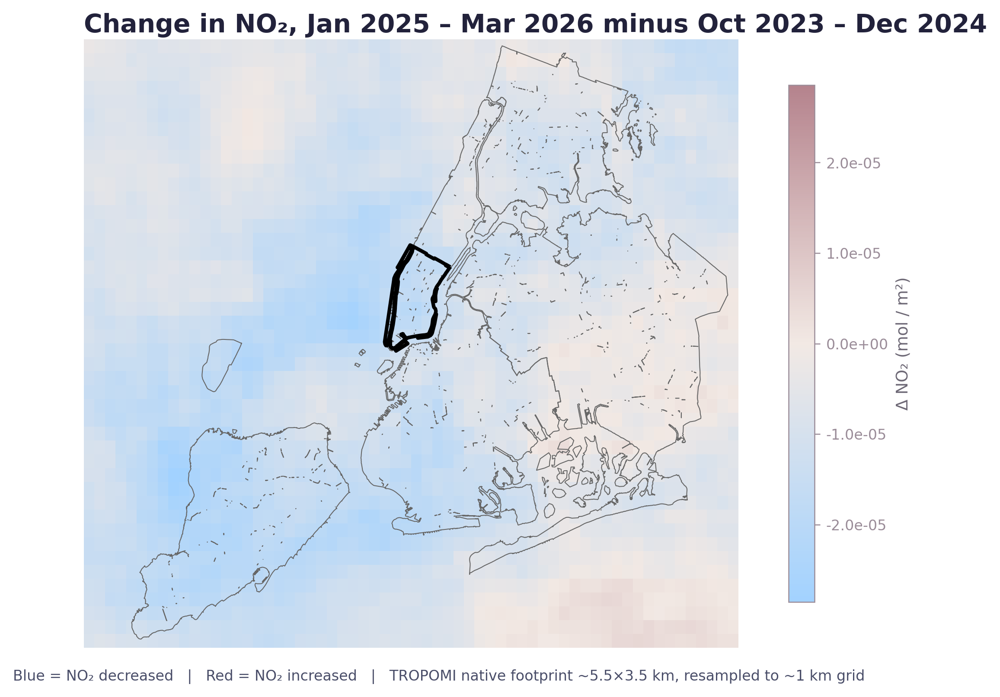
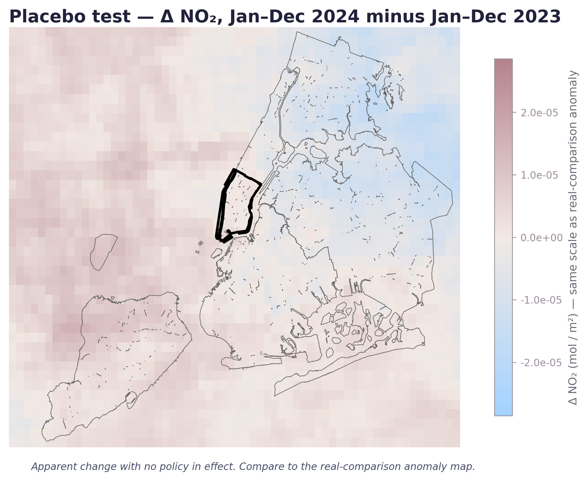
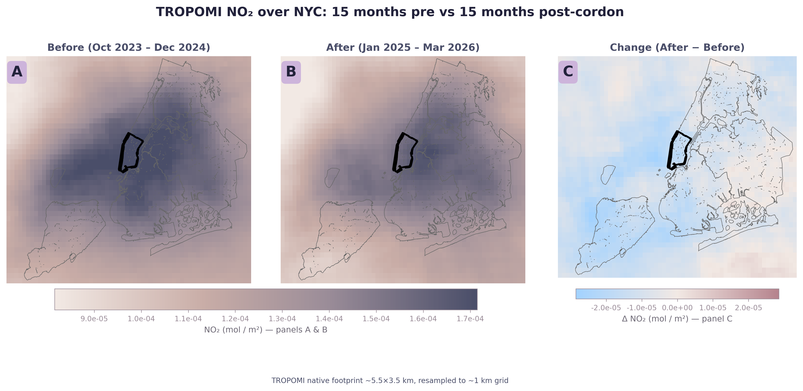

Did the air over the cordon get cleaner?
From 800 km up, a Sentinel-5P satellite measures the column of NO₂ above each square kilometer of New York. NO₂ is a tailpipe pollutant with an atmospheric lifetime of a few hours, so when cars drop, it drops fast. Inside the cordon, the post-period mean is 9.6% lower than the pre-period. Across the rest of NYC, it's 6.5% lower. Both regions are on the broader downward NO₂ trajectory of cleaner vehicle fleets nationwide. The cordon-specific gap — the part that's extra — is roughly 3.1 percentage points.
Run the identical pixel-level comparison on 2024 against 2023, with no cordon in either, and the cordon-vs-rest gap collapses to essentially zero. The two regions move together when there's no policy; they diverge when the cordon is on. Side by side, the maps look like different signals.
Real comparison vs placebo, the same geometry.


The full three-panel comparison.

Three findings, one consistent story.
A small drop in cars (Chapter 01) plus a real shift to lower-emission modes (Chapter 02) equals a small but distinguishable air signal directly over the area where the cars stopped going. Three independent datasets, one consistent direction. The headline 22% pollution drop reported in some early coverage doesn't survive the placebo. What survives is a smaller, cleaner ~3 pp cordon-specific NO₂ gap.
TROPOMI's footprint is ~5 × 3 km, so the cordon resolves to about 24 pixels — fine for cordon-vs-NYC, too coarse for neighborhood-level differences. It measures the column above the city, not the air at the curb; surface-level pedestrian exposure would need ground monitors closer to the cordon than the federal EPA network has anywhere in Manhattan. NO₂ is also partly weather-driven, but the placebo-year null is the load-bearing reassurance that the gap is signal, not weather. Full caveats →